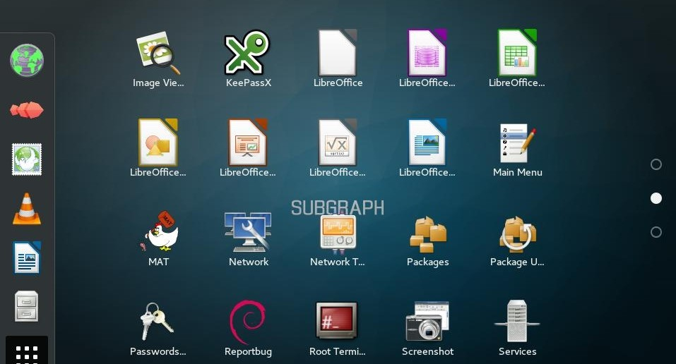
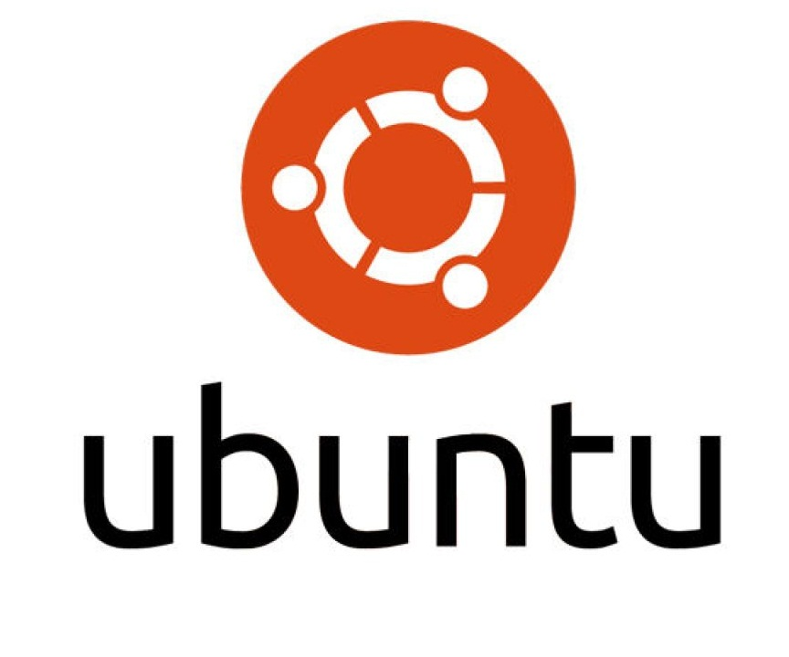
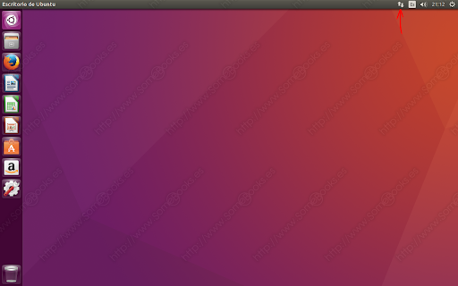
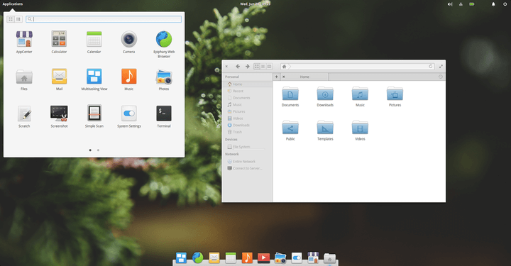

LinuxAddicted
¿Qué es Linux y GNU? ¿Cuál es la diferencia?

Muy a menudo se suele cometer el error de llamar Linux al sistema operativo GNU/Linux y sus distribuciones, de manera que ambos términos acaban confundiéndose. Esto puede ser un problema al referirnos a sistemas operativos como Android, que aun estando basado en Linux no tiene nada que ver con las distribuciones GNU/Linux.
Este es un error recurrente, y la explicación normal de decir que Linux es sólo el kernel o núcleo del sistema operativo. El Kernel o Núcleo es una pieza fundamental en cualquier sistema operativo. Ya tengas Windows, macOS o GNU/Linux, todos ellos tienen su propio núcleo que se encarga de que el software y el hardware de cualquier ordenador trabajen juntos. El Kernel administra la memoria que utilizan los procesos y las aplicaciones que se ejecutan en tu ordenador. También se encarga de administrar y utilizar los drivers que tiene, de forma que las aplicaciones y programas puedan utilizar correctamente los componentes físicos del equipo como el procesador o la tarjeta gráfica.

Luego aparece el proyecto GNU, GNU buscaba ser un sistema operativo libre completo, pero sin tener por qué desarrollar ellos mismos todos los componentes. En este contexto Linux les vino como anillo al dedo, y la comunidad de GNU se volcó con ambos. Aunque el núcleo o Kernel es una parte fundamental de cualquier sistema operativo, como hemos dicho necesita otros componentes. Para hacerlo funcional, en sus inicios al Kernel Linux se le fueron añadiendo programas y herramientas que estaban escritos por o para el proyecto GNU desarrollado por Richard Stallman.
Por lo tanto, podemos decir que GNU/Linux es el nombre de un sistema operativo que utiliza el Kernel Linux con componentes heredados de GNU. Este sistema a su vez tiene una familia de distribuciones o versiones del sistema operativo, llamadas comúnmente distros, las cuales han ido madurando hasta llegar a ser bastante diferentes entre ellas, pero manteniendo esta unión como punto en común.
El núcleo es una parte esencial de un sistema operativo, pero inútil por sí mismo, sólo puede funcionar en el marco de un sistema operativo completo. Linux se utiliza normalmente en combinación con el sistema operativo GNU: el sistema completo es básicamente GNU al que se le ha añadido Linux, es decir, GNU/Linux. Todas las distribuciones denominadas «Linux» son en realidad distribuciones GNU/Linux.

Distribuciones GNU/Linux más populares


Debian
Ubuntu
Linux Mint
Elementary OS
Debian
Es una de las distribuciones de Linux más antigua y popular al mismo tiempo. Para la gran mayoría se trata de la distro más estable, aunque hay otros aspectos a destacar como son los repositorios, gestores de paquetes y la comunidad detrás de Debian. Debian es un sistema operativo libre que ha sido creado por todo tipo de usuarios, es un sistema operativo colaborativo en el que trabajan todo tipo de personas para actualizarlo, añadir funciones y mantenerlo siempre al día para que sea práctico.
Debian es especialmente popular entre los usuarios avanzados debido a su excelencia técnica y a sus comités siempre atentos a las necesidades y expectativas de la comunidad Linux. Debian también introdujo muchas características a Linux, que ahora son comunes. Por ejemplo, Debian fue la primera distribución de Linux en incluir un sistema de gestión de paquetes para una fácil instalación y desinstalación del software. Además, también fue la primera que podía actualizarse sin necesidad de reinstalarla. Entre sus mayores ventajas está el hecho de que admite una gran variedad de arquitecturas de hardware. Esto le da ventaja sobre otras distribuciones como la conocida Linux Mint o Fedora, que ya no admiten muchas arquitecturas que Debian sigue admitiendo; otra de su mayores ventajas es que tiene fama de una distribución extremadamente estable, y es cierto. No es muy común tener problemas con el uso diario de Debian, y precisamente al ser muy estable, puedes usar tu tiempo para tu trabajo u otras tareas que debas hacer, sin tener que estar con la mente atenta a que habrá problemas o que saltarán errores.
Ubuntu
Otra de las más elegidas cuando se trata de instalar una distribución de Linux en cualquier equipo. Y es que su sencillo proceso de instalación hace que podamos tener Ubuntu en nuestro equipo en un abrir y cerrar de ojos. Cuenta con una tienda de aplicaciones que permite la instalación y actualización de software desde la propia interfaz gráfica, lo que simplifica su uso. Es muy similar a Windows en cuanto a diseño por lo que el cambio no será complicado para ningún usuario, desde principiantes a niños. La comunidad detrás de Ubuntu es otro de los puntos a favor de esta distribución.
La iniciativa de software libre alcanza su máxima expresión cuando en el equipo se instala el sistema operativo GNU Linux en lugar de Windows. El término “Ubuntu” proviene del zulú y significa “humanidad hacia otros” o bien “yo soy porque nosotros somos”. Precisamente su slogan “Linux para seres humanos” (Linux for Human Beings) pretende enfatizar esa facilidad de manejo. Además, esta es una de las distribuciones que más atrae a los desarrolladores y compañías fabricantes de software, es por esto que podremos encontrar una versión fácilmente instalable para la mayoría de nuestros programas favoritos en otros sistemas operativos, como Steam, Telegram, Antivirus, Spotify, VLC, entre otros. Incluso ya podemos encontrar herramientas profesionales para esta distribución, un ejemplo es la herramienta Blender, la cual es utilizada en grandes proyectos de modelado, animación y renderizadode películas, videojuegos, etc.
Linux Mint
Es otra de las distribuciones de Linux más populares. Se basa en Ubuntu pero hay grandes diferencias entre ambas distros. Mint es mucho más rápida, ligera y sencilla de manejar, sobre todo para usuarios poco experimentados en entorno Linux. Nada más instalarla, encontraremos una serie de aplicaciones con las que podremos comenzar a manejarnos fácilmente desde el primer momento. Linux Mint es una distribución de GNU/Linux comunitaria de origen franco-irlandesa basada en Ubuntu, y a su vez en Debian, que tiene por objetivo proveer "un sistema operativo moderno, elegante y cómodo que sea tanto poderoso como fácil de usar".
Esta distribuciòn se caracteriza por ser muy similar a Windows, sistema operativo al cual la mayorìa de nosotros nos hemos acostumbrado. No importa de qué versión vengas de Windows (XP, Vista, 7, 8 o 10), no te será difícil pasar a Linux Mint, ya que te encontrarás todo (aplicaciones, archivos, iconos, bandeja del sistema y configuración) en su lugar habitual. Tu escritorio seguirá siendo el mismo y funcionará de la misma manera. Esta es quizás, otra de las razones por las que más usuarios procedentes de Windows se pasan a Linux Mint. Todo el hardware que utilizaras con Windows será compatible con Linux Mint desde Bluetooth, touchpad, Wi-Fi, Ethernet, teclas de función, hasta monitores e impresoras externas, entre otros dispositivos. Todo funcionará con Linux y prácticamente sin configuración. Ademàs Linux Mint es un sistema operativo muy rápido, en ocasiones, más que Windows. Su arranque es de tan solo unos segundos y una vez iniciada la sesión, no tienes que esperar más tiempo a que se cargue para poder utilizar el ordenador, a diferencia del sistema de Microsoft que en algunos ordenadores, sobre todo los antiguos, algunos arranques de sistema se hacen eternos.

Elementary OS
Se trata de una de las distribuciones de Linux que más ha cuidado su interfaz gráfica, llamada por muchos "la distro màs bonita", la cual tiene un parecido importante con macOS. Pero sin duda, lo más importante es que este nivel de detalle en su interfaz gráfica no implica que se vea afectado el rendimiento, puesto que se trata de una distro bastante ligera siempre y cuando la vayamos a ejecutar en ordenadores relativamente modernos. Elementary OS es una distro Linux basada en Debian cuyo principal objetivo es cuidar hasta el más mínimo detalle la apariencia de la misma para hacerla lo más sencilla de usar a todos los usuarios. Esta distro comenzó sus andadas dentro de Linux como un simple pack de iconos, sin embargo, el concepto gustó a muchos desarrolladores que en poco tiempo se pusieron manos a la obra para crear la distro que conocemos hoy en día. Una de las que mejor imitan la apariencia de macOS.
Estamos ante un sistema que, aunque cuida mucho la apariencia y los detalles, está enormemente optimizado para que el sistema inicie rápido, las aplicaciones se abran casi al instante y podamos aprovechar al máximo cada segundo. Igual que lo que ofrece macOS en los Mac, pero sin tener que comprar el ordenador a Apple. Aunque no llega a la altura de la App Store de Apple, Elementary OS ofrece a los usuarios un AppCenter muy completo donde podemos encontrar hasta 160 apps, tanto gratis como de pago (opcional), para obtener la mejor experiencia posible al usar esta distro. Estas apps han sido diseñadas teniendo en mente la apariencia y funciones de Elementary OS, por lo que garantizan la mejor experiencia posible, además de ser seguras y respetar la privacidad de los usuarios.
¿Es Android una Distribuciòn GNU/Linux?

Es posible que hayas escuchado en alguna parte que el nùcleo del sistema operativo Android estè basado en Linux, es muy comùn entonces el preguntarse si èste sistema operativo es tambièn una distribuciòn màs de GNU orientada a equipos mòviles. El Kernel de por sí no puede funcionar como sistema operativo si no se le añaden herramientas y aplicaciones. Es aquí donde nacen las diferencias, pues mientras Google utiliza sus propios recursos otros desarrolladores utilizan el proyecto GNU para completar un sistema operativo funcional.

Linux es un Kernel libre y abierto, de manera que cualquier desarrollador puede cogerlo para crear su sistema operativo, el cual no tiene por qué tener herramientas de GNU. Android es un ejemplo de ello, Google decidió utilizar el Kernel e incorporarle sus herramientas y bibliotecas. Esto hace que contenga Linux sin ser GNU/Linux. Por lo tanto, y aunque Android y GNU/Linux comparten una pequeña parte de su código, el núcleo, son sistemas operativos totalmente diferentes. Sus librerías son diferentes, lo que hace que las aplicaciones de ambos sistemas se desarrollen de forma totalmente distinta, y que por lo tanto las de uno no sean compatibles con el otro.
Leonard Pirela C.I. 28.171.628
Multimedia y Diseño Web